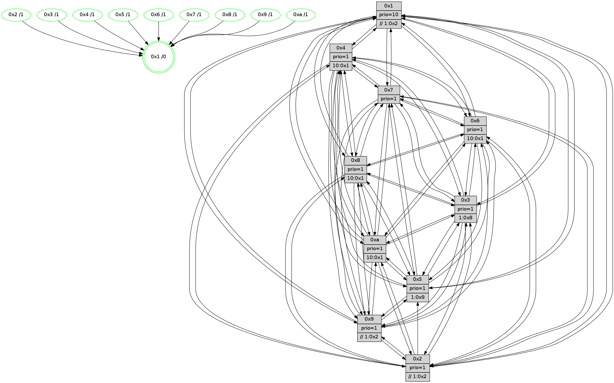

>> << IDX [start] -100 -25 -5 +0 +5 +25 +100 [740.48358798]
 Previous packets
735.006654 beacon05(faad) #0 coord=01,02,03,04,05,06,07,0a,09,08 cycle=688.0ms assoc 64 37 f0
735.016654 beacon06(faad) #0 coord=01,02,03,04,05,06,07,0a,09,08 cycle=688.0ms assoc 64 b9 27
735.026656 beacon07(faad) #0 coord=01,02,03,04,05,06,07,0a,09,08 cycle=688.0ms assoc 64 c3 6a
735.036659 beacon0a(faad) #0 coord=01,02,03,04,05,06,07,0a,09,08 cycle=688.0ms assoc 64 b2 61
735.046660 beacon09(faad) #0 coord=01,02,03,04,05,06,07,0a,09,08 cycle=688.0ms assoc 64 3c b6
735.056661 beacon08(faad) #0 coord=01,02,03,04,05,06,07,0a,09,08 cycle=688.0ms assoc 64 46 fb
735.068228 [Hello(1): seq=380 sym=4,2,9,5,10,3,8,6,7 sysInfo=coloring-mode-on,ColoringModeRequestCalled stat=4:10,4,7,0/2:6,4,14,9/9:9,12,8,0/5:6,1,9,1/10:1,5,14,8/3:11,3,5,11/8:15,4,2,7/6:9,1,0,7/7:9,5,5,8]
735.071534 [Hello(6): seq=471 sym=2,3,5,4,7,9,8,10,1 sysInfo= stat=2:0,7,0,7/3:5,8,8,7/5:8,3,9,10/4:8,9,6,0/7:15,11,5,1/9:11,6,9,6/8:9,7,10,6/10:14,0,1,7/1:6,5,8,1]
735.075308 [Hello(4): seq=471 sym=5,7,6,2,3,9,8,10,1 sysInfo= stat=5:15,7,8,8/7:1,10,9,2/6:8,15,11,8/2:3,10,5,8/3:13,1,1,5/9:14,2,6,3/8:3,3,9,8/10:11,2,11,7/1:6,1,12,1]
735.078136 [STC(4)->1 #0.71 tree-change,inconsistent-stability,stable,to-color d=1]
735.081115 [Hello(7): seq=471 sym=2,3,5,6,4,8,9,10,1 sysInfo=hasWarning stat=2:7,3,14,9/3:5,8,10,9/5:4,5,13,12/6:11,4,11,3/4:1,1,6,0/8:15,15,13,5/9:12,14,12,8/10:4,15,14,8/1:0,2,11,1]
735.083719 [STC(2)->1 #0.71 tree-change,inconsistent-stability,stable,to-color d=1]
735.087599 [STC(7)->1 #0.71 tree-change,inconsistent-stability,to-color d=1]
----------------------------------------------------------------------
735.754802 beacon01(faad) #0 coord=01,02,03,04,05,06,07,0a,09,08 cycle=688.0ms assoc
-- color-indic=1 64 6f 2e
735.764784 beacon02(faad) #0 coord=01,02,03,04,05,06,07,0a,09,08 cycle=688.0ms assoc 64 fc 1f
735.774786 beacon03(faad) #0 coord=01,02,03,04,05,06,07,0a,09,08 cycle=688.0ms assoc 64 86 52
735.784785 beacon04(faad) #0 coord=01,02,03,04,05,06,07,0a,09,08 cycle=688.0ms assoc 64 f1 b8
735.794784 beacon05(faad) #0 coord=01,02,03,04,05,06,07,0a,09,08 cycle=688.0ms assoc 64 8b f5
735.804784 beacon06(faad) #0 coord=01,02,03,04,05,06,07,0a,09,08 cycle=688.0ms assoc 64 05 22
735.814785 beacon07(faad) #0 coord=01,02,03,04,05,06,07,0a,09,08 cycle=688.0ms assoc 64 7f 6f
735.824790 beacon0a(faad) #0 coord=01,02,03,04,05,06,07,0a,09,08 cycle=688.0ms assoc 64 0e 64
735.834790 beacon09(faad) #0 coord=01,02,03,04,05,06,07,0a,09,08 cycle=688.0ms assoc 64 80 b3
735.844790 beacon08(faad) #0 coord=01,02,03,04,05,06,07,0a,09,08 cycle=688.0ms assoc 64 fa fe
735.859174 [Color(1) seq=152 @0:0 prio=10 >>1.@2,1.@3,1.@5]
735.860622 [Color(4) seq=101 @0:0 prio=1 >10.@1,1.@2,1.@3,1.@5]
735.862660 [Hello(9): seq=415 sym=2,5,3,4,7,6,8,10,1 sysInfo=hasWarning stat=2:0,2,1,0/5:0,1,1,0/3:11,0,2,8/4:0,10,5,5/7:3,10,13,4/6:13,13,8,6/8:0,1,0,0/10:11,8,8,8/1:15,2,14,1]
735.865447 [Color(6) seq=125 @0:0 prio=1 >10.@1,1.@8,1.@9,1.@a]
735.868455 [Hello(8): seq=415 sym=5,2,3,4,7,6,9,10,1 sysInfo=hasWarning stat=5:5,0,10,8/2:15,7,1,2/3:13,9,5,9/4:6,5,8,6/7:1,5,11,6/6:12,10,6,8/9:15,8,10,5/10:11,1,9,6/1:4,9,12,0]
735.871297 [Hello(10): seq=404 sym=6,2,3,8,9,5,7,4,1 sysInfo=hasWarning stat=6:6,9,10,3/2:8,9,1,1/3:7,8,14,5/8:15,10,7,7/9:12,9,4,4/5:9,15,5,9/7:3,6,9,3/4:15,6,15,6/1:1,10,14,1]
735.874429 [Color(10) seq=103 @0:0 prio=1 >10.@1,1.@2,1.@3,1.@5]
735.877019 [Hello(2): seq=468 sym=4,5,7,6,3,9,8,10,1 sysInfo=hasWarning stat=4:6,3,5,4/5:4,8,6,1/7:10,1,13,4/6:10,7,10,6/3:10,1,2,3/9:2,3,1,0/8:0,15,2,5/10:9,5,3,5/1:15,5,7,1]
735.879861 [Color(8) seq=138 @0:0 prio=1 >10.@1,1.@2,1.@3,1.@5]
735.881687 [Color(9) seq=120 @0:0 prio=1 >>1.@2,1.@3,1.@5]
735.883814 [Color(3) seq=123 @0:0 prio=1 >1.@8,1.@9,1.@a]
735.888881 [Hello(5): seq=472 sym=7,6,4,3,1,9,8,10,2 sysInfo=hasWarning stat=7:0,5,12,4/6:14,5,10,7/4:11,14,0,5/3:15,13,1,6/1:0,7,12,1/9:5,15,3,0/8:11,10,2,5/10:0,1,0,0/2:9,8,3,0]
735.893163 [Color(2) seq=117 @0:0 prio=1 >>1.@2,1.@3,1.@5]
735.898563 [Color(5) seq=125 @0:0 prio=1 >1.@9,1.@a]
----------------------------------------------------------------------
736.542934 beacon01(faad) #0 coord=01,02,03,04,05,06,07,0a,09,08 cycle=688.0ms assoc
-- color-indic=1 64 bb 1b
736.552915 beacon02(faad) #0 coord=01,02,03,04,05,06,07,0a,09,08 cycle=688.0ms assoc 64 28 2a
736.562916 beacon03(faad) #0 coord=01,02,03,04,05,06,07,0a,09,08 cycle=688.0ms assoc 64 52 67
736.572916 beacon04(faad) #0 coord=01,02,03,04,05,06,07,0a,09,08 cycle=688.0ms assoc 64 25 8d
736.582916 beacon05(faad) #0 coord=01,02,03,04,05,06,07,0a,09,08 cycle=688.0ms assoc 64 5f c0
736.592917 beacon06(faad) #0 coord=01,02,03,04,05,06,07,0a,09,08 cycle=688.0ms assoc 64 d1 17
736.602918 beacon07(faad) #0 coord=01,02,03,04,05,06,07,0a,09,08 cycle=688.0ms assoc 64 ab 5a
736.612922 beacon0a(faad) #0 coord=01,02,03,04,05,06,07,0a,09,08 cycle=688.0ms assoc 64 da 51
736.622923 beacon09(faad) #0 coord=01,02,03,04,05,06,07,0a,09,08 cycle=688.0ms assoc 64 54 86
736.632922 beacon08(faad) #0 coord=01,02,03,04,05,06,07,0a,09,08 cycle=688.0ms assoc 64 2e cb
736.645114 [Hello(3): seq=472 sym=1,7,6,2,4,8,9,10,5 sysInfo= stat=1:14,6,11,1/7:15,9,7,2/6:1,13,1,8/2:6,15,7,8/4:13,4,5,5/8:14,13,7,3/9:2,6,12,6/10:7,0,9,6/5:14,14,7,7]
736.655287 [Hello(4): seq=472 sym=5,7,6,2,3,9,8,10,1 sysInfo= stat=5:0,8,9,8/7:2,10,10,2/6:8,0,11,8/2:4,11,6,8/3:13,2,1,5/9:15,3,6,3/8:4,4,9,8/10:12,3,11,7/1:6,1,12,1]
736.658757 [Hello(7): seq=472 sym=2,3,5,6,4,8,9,10,1 sysInfo=hasWarning stat=2:8,4,14,9/3:5,9,10,9/5:5,6,13,12/6:11,5,11,3/4:1,1,6,0/8:0,0,13,5/9:13,15,12,8/10:5,0,14,8/1:0,3,11,1]
736.666129 [Hello(6): seq=472 sym=2,3,5,4,7,9,8,10,1 sysInfo= stat=2:1,8,1,7/3:5,9,8,7/5:9,4,9,10/4:9,9,7,0/7:0,11,6,1/9:11,7,9,6/8:10,8,10,6/10:15,1,1,7/1:6,5,8,1]
----------------------------------------------------------------------
737.331065 beacon01(faad) #0 coord=01,02,03,04,05,06,07,0a,09,08 cycle=688.0ms assoc
-- color-indic=1 64 07 1e
737.341047 beacon02(faad) #0 coord=01,02,03,04,05,06,07,0a,09,08 cycle=688.0ms assoc 64 94 2f
737.351047 beacon03(faad) #0 coord=01,02,03,04,05,06,07,0a,09,08 cycle=688.0ms assoc 64 ee 62
737.371048 beacon05(faad) #0 coord=01,02,03,04,05,06,07,0a,09,08 cycle=688.0ms assoc 64 e3 c5
737.381049 beacon06(faad) #0 coord=01,02,03,04,05,06,07,0a,09,08 cycle=688.0ms assoc 64 6d 12
737.391049 beacon07(faad) #0 coord=01,02,03,04,05,06,07,0a,09,08 cycle=688.0ms assoc 64 17 5f
737.401052 beacon0a(faad) #0 coord=01,02,03,04,05,06,07,0a,09,08 cycle=688.0ms assoc 64 66 54
737.421053 beacon08(faad) #0 coord=01,02,03,04,05,06,07,0a,09,08 cycle=688.0ms assoc 64 92 ce
737.435480 [Color(3) seq=124 @0:0 prio=1 >1.@8,1.@9,1.@a]
737.437271 [Hello(8): seq=416 sym=5,2,3,4,7,6,9,10,1 sysInfo=hasWarning stat=5:6,1,10,8/2:15,8,1,2/3:14,10,5,9/4:7,5,8,6/7:2,5,11,6/6:13,10,6,8/9:15,9,10,5/10:11,1,9,6/1:5,9,12,0]
737.440579 [Hello(5): seq=473 sym=7,6,4,3,1,9,8,10 sysInfo=hasWarning stat=7:1,5,12,4/6:15,5,10,7/4:12,14,0,5/3:0,13,1,6/1:1,8,12,1/9:5,15,3,0/8:11,10,2,5/10:0,1,0,0]
737.443313 [Color(1) seq=153 @0:0 prio=10 >>1.@2,1.@3,1.@5]
737.444851 [Color(8) seq=139 @0:0 prio=1 >10.@1,1.@2,1.@3,1.@5]
737.446638 [Color(6) seq=126 @0:0 prio=1 >10.@1,1.@8,1.@9,1.@a]
737.449155 [Color(5) seq=126 @0:0 prio=1 >1.@9,1.@a]
737.451269 [Hello(9): seq=416 sym=2,5,3,4,7,6,8,10,1 sysInfo=hasWarning stat=2:0,3,1,0/5:1,2,1,0/3:12,1,2,8/4:1,10,5,5/7:4,10,13,4/6:14,13,8,6/8:0,1,0,0/10:11,8,8,8/1:0,3,14,1]
737.454081 [Color(9) seq=121 @0:0 prio=1 >>1.@2,1.@3,1.@5]
737.456859 [Hello(10): seq=405 sym=6,2,3,8,9,5,7,4,1 sysInfo=hasWarning stat=6:7,9,10,3/2:9,10,1,1/3:8,9,14,5/8:15,11,7,7/9:12,10,4,4/5:10,0,5,9/7:4,6,9,3/4:0,6,15,6/1:2,10,14,1]
737.460299 [Color(10) seq=104 @0:0 prio=1 >10.@1,1.@2,1.@3,1.@5]
737.463320 [Color(2) seq=118 @0:0 prio=1 >>1.@2,1.@3,1.@5]
737.466773 [Color(4) seq=102 @0:0 prio=1 >10.@1,1.@2,1.@3,1.@5]
----------------------------------------------------------------------
738.119197 beacon01(faad) #0 coord=01,02,03,04,05,06,07,0a,09,08 cycle=688.0ms assoc
-- color-indic=1 64 c3 10
738.129178 beacon02(faad) #0 coord=01,02,03,04,05,06,07,0a,09,08 cycle=688.0ms assoc 64 50 21
738.139178 beacon03(faad) #0 coord=01,02,03,04,05,06,07,0a,09,08 cycle=688.0ms assoc 64 2a 6c
738.149179 beacon04(faad) #0 coord=01,02,03,04,05,06,07,0a,09,08 cycle=688.0ms assoc 64 5d 86
738.159180 beacon05(faad) #0 coord=01,02,03,04,05,06,07,0a,09,08 cycle=688.0ms assoc 64 27 cb
738.169178 beacon06(faad) #0 coord=01,02,03,04,05,06,07,0a,09,08 cycle=688.0ms assoc 64 a9 1c
738.179180 beacon07(faad) #0 coord=01,02,03,04,05,06,07,0a,09,08 cycle=688.0ms assoc 64 d3 51
738.189185 beacon0a(faad) #0 coord=01,02,03,04,05,06,07,0a,09,08 cycle=688.0ms assoc 64 a2 5a
738.199186 beacon09(faad) #0 coord=01,02,03,04,05,06,07,0a,09,08 cycle=688.0ms assoc 64 2c 8d
738.209186 beacon08(faad) #0 coord=01,02,03,04,05,06,07,0a,09,08 cycle=688.0ms assoc 64 56 c0
738.220716 [Hello(3): seq=473 sym=1,7,6,2,4,8,9,10,5 sysInfo= stat=1:15,7,11,1/7:0,9,7,2/6:2,14,1,8/2:6,0,7,8/4:14,5,5,5/8:15,14,7,3/9:3,7,12,6/10:8,1,9,6/5:15,15,7,7]
738.223349 [Hello(7): seq=473 sym=2,3,5,6,4,8,9,10,1 sysInfo=hasWarning stat=2:8,5,14,9/3:5,10,10,9/5:6,7,13,12/6:12,6,11,3/4:1,2,6,0/8:1,1,13,5/9:14,0,12,8/10:6,1,14,8/1:0,4,11,1]
738.226296 [Hello(4): seq=473 sym=5,7,6,2,3,9,8,10,1 sysInfo= stat=5:0,8,9,8/7:3,10,10,2/6:9,0,11,8/2:4,11,6,8/3:13,2,1,5/9:15,3,6,3/8:4,4,9,8/10:12,3,11,7/1:6,1,12,1]
738.233800 [Hello(6): seq=473 sym=2,3,5,4,7,9,8,10,1 sysInfo= stat=2:1,9,1,7/3:5,9,8,7/5:9,5,9,10/4:9,10,7,0/7:0,11,6,1/9:12,8,9,6/8:10,8,10,6/10:0,2,1,7/1:6,5,8,1]
738.237774 [Hello(1): seq=382 sym=4,2,9,5,10,3,8,6,7 sysInfo=coloring-mode-on,ColoringModeRequestCalled stat=4:12,6,8,0/2:7,6,15,9/9:11,14,8,0/5:7,3,9,1/10:3,7,14,8/3:12,4,5,11/8:0,6,2,7/6:11,3,0,7/7:11,5,6,8]
738.242514 [STC(1) #0.72 tree-change,inconsistent-stability,stable,to-color d=0]
----------------------------------------------------------------------
738.907328 beacon01(faad) #0 coord=01,02,03,04,05,06,07,0a,09,08 cycle=688.0ms assoc
-- color-indic=1 64 7f 15
738.917310 beacon02(faad) #0 coord=01,02,03,04,05,06,07,0a,09,08 cycle=688.0ms assoc 64 ec 24
738.927313 beacon03(faad) #0 coord=01,02,03,04,05,06,07,0a,09,08 cycle=688.0ms assoc 64 96 69
738.937313 beacon04(faad) #0 coord=01,02,03,04,05,06,07,0a,09,08 cycle=688.0ms assoc 64 e1 83
738.947311 beacon05(faad) #0 coord=01,02,03,04,05,06,07,0a,09,08 cycle=688.0ms assoc 64 9b ce
738.957312 beacon06(faad) #0 coord=01,02,03,04,05,06,07,0a,09,08 cycle=688.0ms assoc 64 15 19
738.967311 beacon07(faad) #0 coord=01,02,03,04,05,06,07,0a,09,08 cycle=688.0ms assoc 64 6f 54
738.977317 beacon0a(faad) #0 coord=01,02,03,04,05,06,07,0a,09,08 cycle=688.0ms assoc 64 1e 5f
738.987315 beacon09(faad) #0 coord=01,02,03,04,05,06,07,0a,09,08 cycle=688.0ms assoc 64 90 88
738.997317 beacon08(faad) #0 coord=01,02,03,04,05,06,07,0a,09,08 cycle=688.0ms assoc 64 ea c5
739.010199 [STC(7)->1 #0.72 tree-change,inconsistent-stability,stable,to-color d=1]
739.012820 [STC(4)->1 #0.72 tree-change,inconsistent-stability,stable,to-color d=1]
739.014695 [Hello(2): seq=470 sym=4,5,7,6,3,9,8,10,1 sysInfo=hasWarning stat=4:8,4,5,4/5:4,9,6,1/7:12,1,13,4/6:12,7,10,6/3:12,2,2,3/9:2,3,1,0/8:0,15,2,5/10:9,5,3,5/1:1,6,8,1]
739.017872 [Color(1) seq=154 @0:0 prio=10 >>1.@2,1.@3,1.@5]
739.019978 [Hello(10): seq=406 sym=6,2,3,8,9,5,7,4,1 sysInfo=hasWarning stat=6:8,9,10,3/2:9,11,1,1/3:9,9,14,5/8:15,11,7,7/9:12,10,4,4/5:10,0,5,9/7:5,6,9,3/4:1,7,15,6/1:3,10,15,1]
739.022403 [Hello(5): seq=474 sym=7,6,4,3,1,9,8,10 sysInfo=hasWarning stat=7:2,5,12,4/6:0,5,10,7/4:13,15,0,5/3:1,14,1,6/1:2,8,13,1/9:6,0,3,0/8:11,10,2,5/10:1,2,0,0]
739.025479 [STC(2)->1 #0.72 tree-change,inconsistent-stability,stable,to-color d=1]
739.027346 [STC(5)->1 #0.72 tree-change,inconsistent-stability,stable,to-color d=1]
739.028625 [STC(3)->1 #0.72 tree-change,inconsistent-stability,stable,to-color d=1]
739.033146 [STC(8)->1 #0.72 tree-change,inconsistent-stability,stable,to-color d=1]
739.034518 [Color(4) seq=103 @0:0 prio=1 >10.@1,1.@2,1.@3,1.@5]
739.036643 [Color(5) seq=127 @0:0 prio=1 >1.@9,1.@a]
739.038345 [Hello(9): seq=417 sym=2,5,3,4,7,6,8,10,1 sysInfo=hasWarning stat=2:1,4,1,0/5:1,2,1,0/3:13,2,2,8/4:2,11,5,5/7:5,10,13,4/6:15,13,8,6/8:0,1,0,0/10:11,9,8,8/1:1,3,15,1]
739.041794 [STC(9)->1 #0.72 tree-change,inconsistent-stability,stable,to-color d=1]
739.043623 [STC(10)->1 #0.72 tree-change,inconsistent-stability,stable,to-color d=1]
739.046122 [Color(9) seq=122 @0:0 prio=1 >>1.@2,1.@3,1.@5]
739.051186 [Color(8) seq=140 @0:0 prio=1 >10.@1,1.@2,1.@3,1.@5]
739.052850 [TreeStatus(7)-.->1 #0.72 tree-change,inconsistent-stability,stable child=1]
739.058217 [STC(6)->1 #0.72 tree-change,inconsistent-stability,stable,to-color d=1]
739.060818 [Color(6) seq=127 @0:0 prio=1 >10.@1,1.@8,1.@9,1.@a]
739.064040 [Color(10) seq=105 @0:0 prio=1 >10.@1,1.@2,1.@3,1.@5]
----------------------------------------------------------------------
739.695458 beacon01(faad) #0 coord=01,02,03,04,05,06,07,0a,09,08 cycle=688.0ms assoc
-- color-indic=1 64 4b 0d
739.705442 beacon02(faad) #0 coord=01,02,03,04,05,06,07,0a,09,08 cycle=688.0ms assoc 64 d8 3c
739.715441 beacon03(faad) #0 coord=01,02,03,04,05,06,07,0a,09,08 cycle=688.0ms assoc 64 a2 71
739.725441 beacon04(faad) #0 coord=01,02,03,04,05,06,07,0a,09,08 cycle=688.0ms assoc 64 d5 9b
739.735440 beacon05(faad) #0 coord=01,02,03,04,05,06,07,0a,09,08 cycle=688.0ms assoc 64 af d6
739.745441 beacon06(faad) #0 coord=01,02,03,04,05,06,07,0a,09,08 cycle=688.0ms assoc 64 21 01
739.755441 beacon07(faad) #0 coord=01,02,03,04,05,06,07,0a,09,08 cycle=688.0ms assoc 64 5b 4c
739.765446 beacon0a(faad) #0 coord=01,02,03,04,05,06,07,0a,09,08 cycle=688.0ms assoc 64 2a 47
739.775446 beacon09(faad) #0 coord=01,02,03,04,05,06,07,0a,09,08 cycle=688.0ms assoc 64 a4 90
739.785446 beacon08(faad) #0 coord=01,02,03,04,05,06,07,0a,09,08 cycle=688.0ms assoc 64 de dd
739.796641 [Hello(6): seq=474 sym=2,3,5,4,7,9,8,10,1 sysInfo= stat=2:1,9,1,7/3:5,9,8,7/5:9,5,9,10/4:9,10,7,0/7:0,11,7,1/9:12,8,9,6/8:10,8,10,6/10:0,3,1,7/1:7,5,9,1]
739.800007 [Hello(4): seq=474 sym=5,7,6,2,3,9,8,10,1 sysInfo= stat=5:0,9,9,8/7:3,10,11,3/6:10,1,12,8/2:4,11,6,8/3:13,2,1,5/9:0,4,7,3/8:4,5,9,8/10:12,4,12,7/1:7,1,13,1]
739.802879 [Hello(3): seq=474 sym=1,7,6,2,4,8,9,10,5 sysInfo= stat=1:0,7,12,1/7:1,9,8,3/6:3,15,2,8/2:6,0,7,8/4:15,6,5,5/8:15,15,8,3/9:4,8,13,6/10:8,2,10,6/5:15,0,7,7]
739.810378 PARSE ERROR************************
Traceback (most recent call last):
File "PacketAnalysis.py", line 167, in showOperaPacket
structPacket = OperaPacketParse.parsePacket(rawPacket)
File "../../pkg-python/HipSens/Core/OperaPacketParse.py", line 461, in parsePacket
return parseHelloMessage(data)
File "../../pkg-python/HipSens/Core/OperaPacketParse.py", line 125, in parseHelloMessage
struct.unpack("!H",linkList[:2])[0])
error: unpack requires a string argument of length 2
48 34 07 00 01 da 00 02 02 12 02 00 03 00 05 00 06 00 04 00 08 00 09 00 0a 00 01 00 53 04 00 02 00 00 4c 12 9e 58 9a a5 cd 76 3c 7d 06 22 5d 11 8c 0e 8e 26 1c 41 4d aa